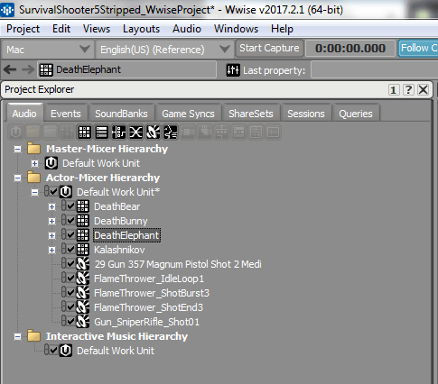
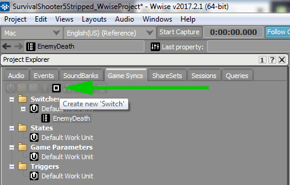
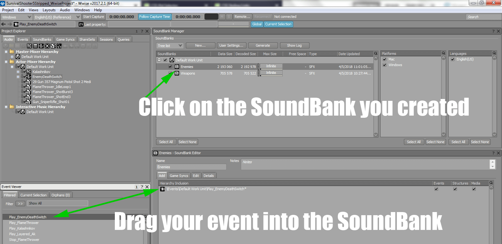

Inside of Pro Tools make the sounds you are going to use for our 3 dying enemies.
Drag the created sounds in from the Finder / Explorer
Check that the Object Type / Action is set to Sound SFX. Click Import.
Shift click to select all the Sound Sfx objects you have imported. Right click to open the context menu. Navigate to New Parent->Random Container
Import sounds and create Random Containers for the remaining two enemies.
In the end - You should have a random container for the Elephant, Bear, and Bunny.
Click on the Game Syncs Tab
Click on the button to create a New Switch Group
Give the Switch Group a name. I choose EnemyDeath.
Click on the button to Create a New Switch
We are going to need 3 of these. One for each enemy
Here is how it should look when it is all done.
Go back to the Audio tab.
Right click on the DefaultWorkUnit-> New Child-> Switch Container and create a new Switch Container
Click and Drag the Random Containers for each of the Enemies into the Switch Container. When finished it should appear as the image above.
Click on the Switch Container in the Actor-Mixer Hierarchy
On the right side of the screen under Switch -> Group click on the >>. Navigate to SwitchGroups->EnemyDeath or whatever you named your Switch
Click and drag the Enemy Random Containers to the Switch State
If you have done everything right you can preview your switch
Right click on the Switch container and add a Play Event
Change the Wwise layout to Soundbank
Add a new SoundBank to hold our Enemy Death Switch Event. I named my SoundBank Enemies.
Click on your newly created bank and drag your Event from the Events window into your SoundBank.
Generate your SoundBanks
Add the AkBank script to a gameobject in your Hierarchy. I used Wwise Global
Set your Bank so that it never Unloads
Click on Bank Name - Select the Bank that contains your Switch Container.
It should look like this when complete.
In the EnemyHealth script find the Death function. Underneath anim.SetTrigger("Dead") add PlayDeathSound();
Under the closing } in the Death function add in the PlayDeathSound() function as it appears above.
The first paramenter in SetSwitch has to match the name of your Switch in GameSyncs
the First paramenter in PostEvent has to match your Event name.